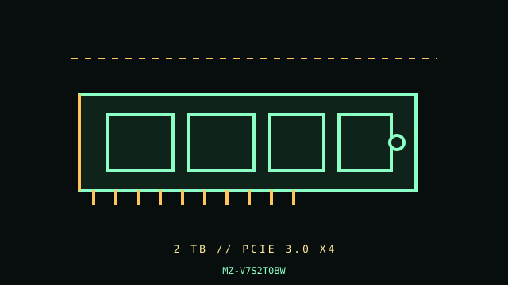

[ PCIE 3.0 NVME DRIVES // IDENTIFIED PRODUCT ]
Samsung 970 EVO Plus 2 TB
2 TB M.2 2280, single-sided module (verify label/board revision); PCIe 3.0 NVMe SSD. Cataloged by the complete manufacturer part number below; performance figures are vendor-rated, not independent test results.

IDENTIFICATION: Verify the complete MPN, suffix, serial/date code, hardware revision and firmware against the product label. Capacity variants, factory heatsinks and regional SKUs may differ; the link and rated data below apply only to the specified configuration where the manufacturer identifies it.
Manufacturer-identified specifications
| Product / MPN | Samsung 970 EVO Plus 2 TB — MZ-V7S2T0BW |
|---|---|
| Capacity / form factor | 2 TB; M.2 2280, single-sided module (verify label/board revision). |
| Interface / lane width | PCIe 3.0 x4. |
| Protocol | NVMe 1.3. |
| Rated performance / endurance | Sequential up to 3,500 MB/s read and 3,300 MB/s write; 1,200 TBW endurance, 2 TB SKU. |
| Model era | 2019 product generation; check manufacturer lifecycle/support notice. |
| Heatsink / revision | Bare module; Samsung also sold heatsink/region-dependent variants. This MPN denotes a bare module; do not assume an included heatsink. |
Compatibility, installation & service
- The 2 TB 970 EVO Plus is a PCIe 3.0 product; it negotiates at the host-supported generation. Samsung 970 EVO Plus revisions have been associated with different NAND/controller/BOM revisions; confirm the complete MPN, label, and datasheet rather than transferring details between suffixes. Boot support is determined by motherboard UEFI/firmware and NVMe support, not the drive alone.
- Before installation, confirm an M.2 M-key socket wired for PCIe/NVMe and a 2280 standoff; check the motherboard manual for shared SATA ports and lane disablement. Remove protective film from the board thermal pad without touching module contacts, reinstall the board cover only if clearance allows, and avoid stacking a second heatsink. Record firmware and SMART data before any firmware update, back up first, and never update firmware while system stability or power is uncertain.
- Do not hot-plug an M.2 module unless the server/platform manual explicitly documents hot-plug support. Shut down cleanly, disconnect standby power when instructed, and use electrostatic-discharge precautions during handling.
- Before replacing a boot drive, verify a recoverable backup, OS recovery media, encryption keys, firmware settings and the target system’s boot mode; physical fit does not establish compatibility.
Manufacturer references
- Samsung 970 EVO Plus — manufacturer product specificationsOfficial manufacturer product/specification reference; use the exact MPN on the drive label and its linked specification/downloads for revisions, capacity ratings, fit and warranty limits.
- NVM Express — specifications and technical documentationStandards reference for NVMe; it does not establish this product’s SKU-specific implementation.
Manufacturer ratings are model/capacity-specific and measured under stated vendor conditions; they are not guarantees of sustained speed in every host. Confirm current datasheet/manual, support status and warranty in the manufacturer’s regional support portal before deployment.